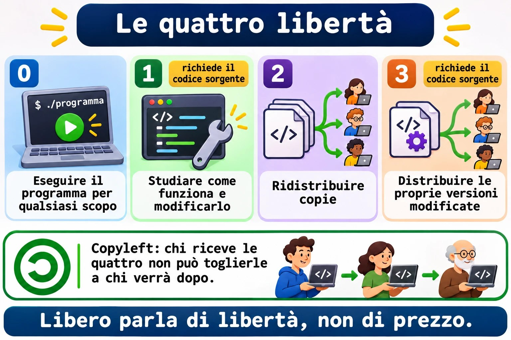
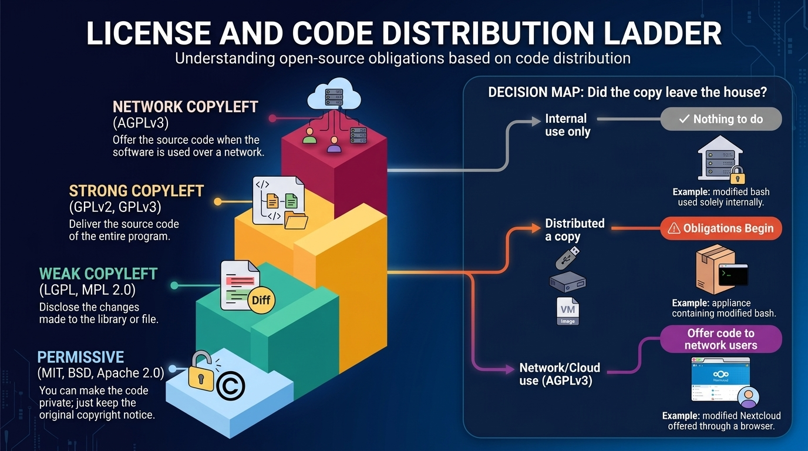
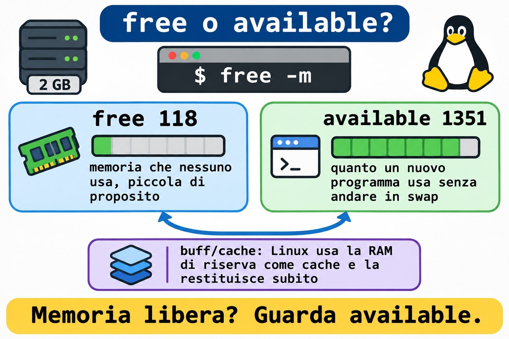
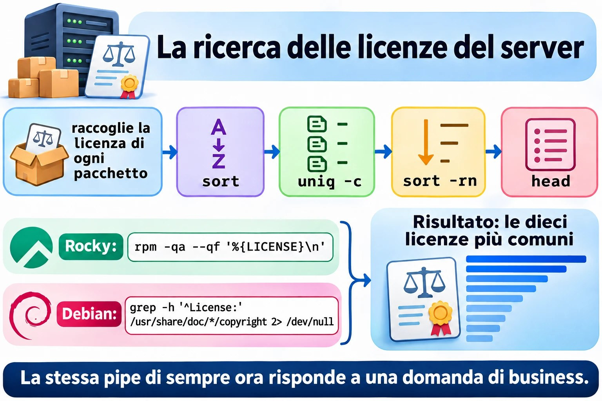
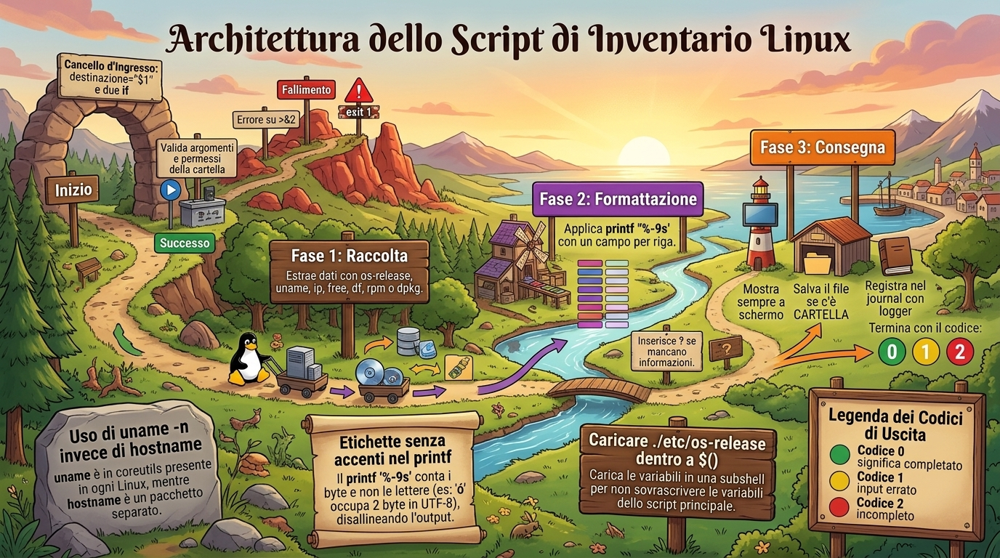
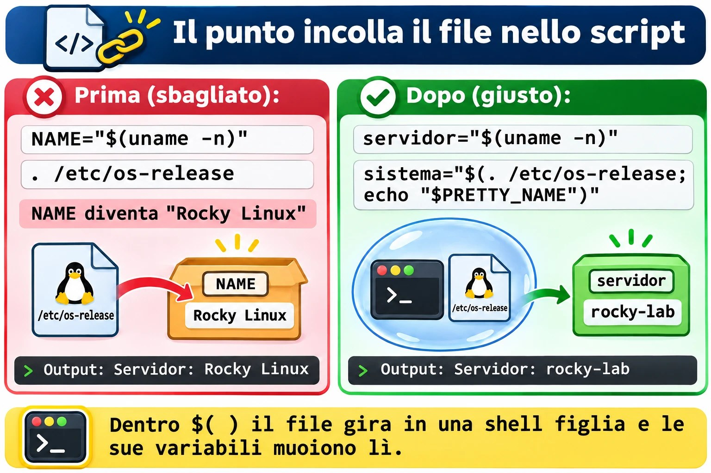

Lezione 1.10 · Il software libero in pratica
Ultima lezione del Modulo 1, e ha due metà che si incontrano alla fine. Nella prima, impari a rispondere alla domanda che prima o poi ogni cliente fa: "cosa gira su questo server, e possiamo usarlo gratis?". Questa è licenza, e la licenza è un tema da sysadmin, non solo da avvocato. Nella seconda, metti insieme tutto ciò che hai visto dalla Lezione 1.1 in uno script vero, inventario.sh: la fotografia di un server, nello stesso formato su Rocky e su Debian, pronta da incollare in una richiesta di assistenza o da archiviare in una cartella.
| Scheda | Lezione 1.10 |
|---|---|
| Modulo | M1 · Riga di comando, lezione 10 di 10, sfida del modulo |
| Quando | Settimana 3 |
| Alla fine sei in grado di | Spiegare le quattro libertà e la differenza tra licenza permissiva e copyleft; dire quando una licenza obbliga a consegnare il codice; trovare la licenza di un pacchetto su Rocky e su Debian; riconoscere i principali programmi liberi per desktop e per server; dire se un Linux gira su una macchina fisica, una VM o un container; scrivere da zero uno script che raccoglie, formatta e salva la fotografia di un server |
| Prerequisiti | Lezioni da 1.1 a 1.9; ~/bin nel PATH su entrambe le VM |
| Durata | Circa 3h |
| Snapshot | m1a10-inicio e m1a10-fim su entrambe le VM |
1 · Riscaldamento
Tre domande, a memoria. Scrivi le risposte; le Soluzioni le controllano alla fine.
- Nella Lezione 1.9,
grep -q root /etc/passwdè terminato con codice 0. Egrep -q naoexiste /etc/passwd? Perché quel numero non è un errore? - Nella Lezione 1.9, qual è la differenza tra
wc -l /etc/passwdewc -l < /etc/passwd, e perché conta dentro uno script? - Scommessa: la tua azienda prende un programma GPL, ne cambia il codice e lo usa solo in casa, sui propri server, senza consegnarlo a nessuno. È obbligata a pubblicare le modifiche?
2 · Perché conta
A marzo del 2024, Redis, uno dei database in memoria più usati al mondo, ha sostituito la licenza BSD con due licenze che non sono di software libero. In pochi giorni, la Linux Foundation ha lanciato Valkey, una copia del codice dell'ultima versione libera. Ad agosto del 2023, Terraform aveva fatto la stessa mossa, e ne è nato OpenTofu. A giugno del 2023, Red Hat ha iniziato a consegnare il codice sorgente di RHEL solo ai clienti, e Rocky Linux, che usi in questa lezione, ha dovuto cambiare il modo di costruire la distribuzione.
In tutte e tre le storie, chi si occupava dei server ha dovuto rispondere, in pochi giorni: "ci riguarda? Possiamo continuare a usarlo? Dobbiamo cambiare?". Chi sapeva leggere una licenza ha risposto in un'ora. Chi non sapeva è rimasto ad aspettare l'ufficio legale.
Proxmox, che fa girare le tue VM, è un altro esempio, più tranquillo: è AGPLv3, gratuito, e l'azienda che lo produce vive di abbonamenti di supporto. Saperlo spiega il messaggio "No valid subscription" che compare quando ci entri, e cosa significa (non è un problema di licenza).
La seconda metà della lezione risolve un'altra richiesta di tutti i giorni: "mandami i dati di quel server". Quanta RAM, quanto disco libero, quale sistema, quale IP, se è una VM. Sai già trovare ogni informazione. Oggi smetti di digitare otto comandi e ne lanci uno.
3 · Modello mentale
La licenza è la regola per chi passa il software ad altri. Finché il software resta con te, quasi tutto è permesso. Gli obblighi iniziano il giorno in cui consegni una copia, oppure, nella AGPL, il giorno in cui altre persone usano il programma attraverso la rete.
Quattro famiglie, dalla più libera alla più esigente:
| Famiglia | Esempi | Se modifichi e consegni una copia | Se lo usi solo in casa |
|---|---|---|---|
| Permissiva | MIT, BSD, Apache 2.0 | Puoi chiudere il codice; mantieni l'avviso di copyright | Niente da fare |
| Copyleft debole | LGPL, MPL 2.0 | Apri le modifiche alla libreria o al file; il tuo programma che si limita a usarla può restare chiuso | Niente da fare |
| Copyleft | GPLv2, GPLv3 | Consegna il codice dell'intero programma, con la stessa licenza | Niente da fare |
| Copyleft di rete | AGPLv3 | Come la GPL | Se altre persone usano la versione modificata attraverso la rete, offri loro il codice |
E l'inventario, la seconda metà:
Un inventario è una fotografia: gli stessi campi, nello stesso ordine, nello stesso formato, su qualsiasi server. Se la fotografia di Rocky e quella di Debian non si possono confrontare riga per riga, non serve.
coleta formata entrega
┌──────────────┐ ┌───────────────┐ ┌──────────────────┐
│ os-release │ │ printf '%-9s' │ │ tela (sempre) │
│ uname, ip │ ─────► │ um campo por │ ────► │ arquivo se PASTA │
│ free, df │ │ linha │ │ journal (logger) │
│ rpm ou dpkg │ │ "?" se faltou │ │ código 0, 1 ou 2 │
└──────────────┘ └───────────────┘ └──────────────────┘4 · Concetto a strati
Essenziale
Da dove viene il software libero. Nel 1983, Richard Stallman annunciò il progetto GNU, per scrivere un intero sistema operativo che tutti potessero usare, studiare e condividere. Nel 1985 creò la FSF, la Free Software Foundation, e poi la GPL, la licenza che protegge quell'idea. Nel 1991, Linus Torvalds aggiunse a GNU ciò che mancava, il kernel. Per questo una parte della comunità dice "GNU/Linux": bash, ls e grep, che usi dalla Lezione 1.1, sono di GNU.
Le quattro libertà, numerate a partire da zero, come fa un buon programmatore:
| Libertà | Cosa garantisce | Richiede |
|---|---|---|
| 0 | Eseguire il programma per qualsiasi scopo | |
| 1 | Studiare come funziona e modificarlo | Accesso al codice sorgente |
| 2 | Ridistribuire copie | |
| 3 | Distribuire le tue versioni modificate | Accesso al codice sorgente |
"Libero" parla di libertà, non di prezzo. La frase classica è free as in free speech, not as in free beer. Un software libero può essere venduto, e un programma gratuito può essere chiuso.
Open source. Nel 1998, un gruppo creò l'OSI, la Open Source Initiative, con un altro discorso: meno etica, più vantaggio pratico, il codice aperto come modo migliore di sviluppare. Le licenze approvate dalle due organizzazioni sono quasi le stesse. Nel lavoro di tutti i giorni vedrai le sigle FOSS (Free and Open Source Software) e FLOSS (Free/Libre and Open Source Software), che mettono insieme le due visioni.
Copyleft è il trucco giuridico della GPL: usare il diritto d'autore per garantire che le copie, e le versioni modificate, restino libere. Chi riceve un programma GPL riceve le quattro libertà e non può toglierle a chi viene dopo.


Le licenze del tuo server. Non devi impararle tutte a memoria; devi riconoscere le famiglie.
| --- | --- | --- |
| Kernel Linux | GPLv2, solo la versione 2 | Copyleft |
| bash, coreutils, grep, tar | GPLv3 o successiva | Copyleft |
| glibc, systemd | LGPL 2.1 o successiva, per la maggior parte | Copyleft debole |
| Firefox, Thunderbird, LibreOffice | MPL 2.0 | Copyleft debole |
| Proxmox VE, Nextcloud | AGPLv3 | Copyleft di rete |
| Apache httpd, Kubernetes | Apache 2.0 | Permissiva |
| nginx, OpenSSH | BSD | Permissiva |
| PostgreSQL | PostgreSQL License, simile alla MIT | Permissiva |
| MariaDB | GPLv2 | Copyleft |
| Samba, Ansible | GPLv3 | Copyleft |
| Python | PSF License | Permissiva |
I programmi liberi che devi saper riconoscere.
| Area | Programmi |
|---|---|
| Ufficio | LibreOffice: Writer (testo), Calc (foglio di calcolo), Impress (presentazioni), Draw, Base, Math |
| Internet | Firefox, Thunderbird |
| Immagini, video e audio | GIMP (foto), Inkscape (vettoriale), Blender (3D), Audacity (audio), VLC (video) |
| Server | Apache httpd e nginx (web), MariaDB, MySQL e PostgreSQL (database), Samba (cartelle per Windows), NFS (cartelle tra Linux), Postfix e Dovecot (e-mail), OpenLDAP (directory) |
| Linguaggi | C, Java, JavaScript, Perl, PHP, Python, shell |
| Pacchetti | dpkg e apt su Debian; rpm e dnf su Rocky |
Trovare la licenza di un pacchetto. Ogni famiglia la tiene in un posto diverso.
# Rocky: rpm tiene la licenza dentro il pacchetto stesso
rpm -qi bash | grep -i '^License'
rpm -q --qf '%{NAME}: %{LICENSE}\n' bash openssh-server systemd
# Debian: ogni pacchetto porta un file copyright
less /usr/share/doc/bash/copyright
grep -m3 '^License:' /usr/share/doc/openssh-server/copyrightIn Rocky 9, il campo arriva nel vecchio formato, come GPLv3+. Le distribuzioni più recenti, come Rocky 10 e Fedora, stanno migrando al formato SPDX, come GPL-3.0-or-later. È la stessa licenza con un altro nome. In Debian, i file più recenti seguono un formato leggibile dalla macchina, con righe License:. Quelli più vecchi sono testo libero: se grep non trova niente, leggi l'inizio del file.
Intermedio
Come si guadagna con il software libero. Il mercato in cui lavori dipende da questo.
| Modello | Come funziona | Esempi |
|---|---|---|
| Abbonamento e supporto | Il software è libero; l'azienda vende aggiornamenti testati, certificazione e qualcuno da chiamare alle 3 di notte | Red Hat, SUSE, Canonical, Proxmox |
| Open core | Il nucleo è libero; le funzioni per le aziende sono a pagamento e chiuse | GitLab (CE è MIT; EE è chiusa) |
| Doppia licenza | Lo stesso codice esce in GPL, gratis, oppure con una licenza commerciale, per chi non vuole aprire il proprio codice | MySQL, Qt |
| Servizio cloud | L'azienda fa girare il software per te e fa pagare l'uso | Database gestiti, Nextcloud in hosting |
| Consulenza e formazione | I soldi vengono dalla conoscenza, non dal codice | Integratori e società di consulenza locali |
| Fondazioni | Le aziende che usano il software pagano una fondazione neutrale perché lo mantenga | Linux Foundation, Apache Software Foundation |
Creative Commons vale per i contenuti, non per il codice: testi, immagini, video, corsi. I pezzi si combinano.
| Sigla | Significa |
|---|---|
| BY | Cita l'autore |
| SA | Condividi con la stessa licenza (il copyleft dei contenuti) |
| NC | Uso non commerciale |
| ND | Nessuna opera derivata: non puoi modificare |
| CC0 | Pubblico dominio: nessuna condizione |
Esempio: Wikipedia usa CC BY-SA. Puoi copiare un articolo nel tuo manuale interno, citando la fonte e mantenendo la stessa licenza.
Quando il codice è visibile, ma non è libero. Alcune aziende hanno iniziato a usare licenze source-available: leggi il codice, ma non puoi, per esempio, offrirlo come servizio concorrente. La SSPL, creata da MongoDB nel 2018, è la più nota. L'OSI non riconosce queste licenze come open source. Redis è passato alla SSPL, e a una licenza propria, nel 2024; con Redis 8, nel 2025, ha ricominciato a offrire anche la AGPLv3. Terraform è passato alla BSL, che consente l'uso in produzione, ma vieta di fare concorrenza a HashiCorp.
Cloud e virtualizzazione.
| Sigla | Cosa ricevi | Di cosa ti occupi | Esempio |
|---|---|---|---|
| IaaS | Macchina virtuale, disco e rete | Dal sistema operativo in su | Una VM in un cloud pubblico |
| PaaS | Ambiente pronto per l'applicazione | Solo del codice e dei dati | Un database gestito |
| SaaS | Il programma pronto, dal browser | Solo dei tuoi dati e utenti | Webmail, CRM online |
Due modi di dividere una macchina:
- Hypervisor (KVM, quello di Proxmox; VMware; Hyper-V): ogni VM ha il proprio kernel. Isolamento forte, più memoria consumata.
- Container (LXC, anch'esso su Proxmox; Docker; Podman): tutti condividono il kernel dell'host. Leggero e veloce, isolamento minore.
Linux dice dove sta girando:
systemd-detect-virt # kvm in una VM di Proxmox; lxc in un CT; none su una macchina fisica
cat /sys/class/dmi/id/sys_vendor # QEMU in una VM di ProxmoxSu una macchina fisica, systemd-detect-virt mostra none e termina con codice 1. Tienilo a mente per lo script.
Password e privacy. Le basi: una password lunga vale più di una "complicata" e corta; una password per servizio, custodita in un gestore di password; MFA, il secondo fattore, su tutto ciò che è importante; HTTPS cifra il percorso, non garantisce che il sito sia onesto; e il browser conserva cookie e cronologia, che la modalità privata non porta alla sessione successiva, ma il tuo provider e il sito continuano a vedere.
Ponte Windows
| In Windows | In Linux |
|---|---|
winver, systeminfo | cat /etc/os-release, uname -r |
| "Informazioni su" mostra "Macchina virtuale" | systemd-detect-virt |
| Programmi e funzionalità: elenco degli installati | rpm -qa su Rocky, dpkg -l su Debian |
| Licenza in "Informazioni su" di ogni programma | rpm -qi PACOTE, /usr/share/doc/PACOTE/copyright |
Script di inventario in PowerShell con Get-ComputerInfo | inventario.sh, che scrivi oggi |
| Licenza per utente o per core, audit di Microsoft | Il kernel e quasi tutto il sistema non fanno pagare licenze; paghi, se vuoi, il supporto |
Avanzato
GPLv2 contro GPLv3. La GPLv3, del 2007, ha aggiunto due cose: protezione contro i brevetti e la regola "anti-tivoizzazione", che vieta di vendere un apparecchio che esegue GPLv3 e impedisce al proprietario di installare una versione modificata. Il kernel è rimasto in GPLv2 "solo", senza il "o successiva", e per questo non può mai passare alla v3. È anche per questo che alcune aziende evitano componenti GPLv3 negli apparecchi chiusi.
"Distribuire" è la parola chiave. Eseguire sul tuo server non è distribuire. Consegnare una chiavetta, un appliance o un'immagine di VM al cliente lo è. Un'azienda che modifica bash per uso interno non deve niente a nessuno. Un'azienda che vende un appliance con quel bash modificato deve consegnare il codice all'acquirente, se lo chiede. La AGPL chiude il buco del servizio nel cloud: se modifichi Nextcloud e lo offri ai clienti attraverso la rete, loro hanno diritto al codice della tua versione.
Il caso RHEL. RHEL è fatto di pacchetti GPL, tra gli altri. Red Hat continua a rispettare la GPL consegnando il codice a chi riceve il binario, cioè ai clienti. Ciò che è cambiato nel 2023 è l'accesso pubblico, che è diventato CentOS Stream, un passo avanti rispetto a RHEL. Rocky, AlmaLinux e altri hanno iniziato a costruire la distribuzione a partire da CentOS Stream e da altre fonti. Per te, sulla VM, non è cambiato niente: dnf update continua a funzionare.


5 · Rocky × Debian
| Rocky Linux 9 e 10 | Debian 13 | |
|---|---|---|
| File che identifica la famiglia | /etc/redhat-release e /etc/rocky-release | /etc/debian_version |
/etc/os-release, campo ID | rocky | debian |
/etc/os-release, campo ID_LIKE | rhel centos fedora | Non esiste: Debian è l'origine |
| Licenza di un pacchetto | rpm -qi PACOTE, campo License | /usr/share/doc/PACOTE/copyright |
| Contare i pacchetti installati | rpm -qa | wc -l | dpkg -l | grep -c '^ii' |
| Nome della scheda di rete in una VM di Proxmox | Dipende dal modello della VM: nel lab, enp6s18; in altre, ens18 o eth0 | Uguale: enp6s18 nel lab |
| Kernel | Vecchio e con correzioni portate da versioni nuove, come il 5.14 di Rocky 9 | Più recente, come il 6.12 di Debian 13 |
systemd-detect-virt | Installato | Installato |
La regola che vale su entrambe: leggi /etc/os-release per sapere il sistema, e /etc/debian_version o /etc/redhat-release solo per scegliere il gestore di pacchetti.
Perché grep -c '^ii' su Debian, e non wc -l? Perché dpkg -l mostra cinque righe di intestazione e anche i pacchetti rimossi che hanno lasciato la configurazione, con rc all'inizio. Solo ii significa "installato".
6 · Lab guidato
Fai tutto su entrambe le VM, a meno che il passo non dica una sola. I test stanno in ~/lab14; lo script pronto va in ~/bin; le fotografie dei server vanno in ~/inventarios. In ogni passo, quando compare Prevedi, scrivi la risposta prima di premere Invio.
Passo 1 · Preparare e chiedere "chi sei?"
Sul nodo Proxmox:
qm snapshot 201 m1a10-inicio
qm snapshot 202 m1a10-inicioSu ogni VM:
mkdir -p ~/lab14 ~/inventarios
cd ~/lab14
cat /etc/os-releasePrevedi. Rocky mostra ID_LIKE="rhel centos fedora". Cosa mostra Debian nella riga ID_LIKE?
Niente: la riga non esiste. ID_LIKE dice "assomiglio a", e Debian è l'origine della famiglia, non un parente. Ubuntu, che viene da Debian, mostra ID_LIKE=debian.
Il file è un elenco di NOME=valor, esattamente il formato di una variabile della shell. Per questo si può caricare:
( . /etc/os-release; echo "$ID | $VERSION_ID | $PRETTY_NAME" )Rocky: qualcosa come rocky | 9.6 | Rocky Linux 9.6 (Blue Onyx). Debian: debian | 13 | Debian GNU/Linux 13 (trixie). Le parentesi aprono una shell figlia: le variabili del file muoiono con lei e non sporcano il tuo terminale. Tieni a mente questo dettaglio per il Guasto A.
Confronta con i file di ogni famiglia:
cat /etc/redhat-release 2> /dev/null
cat /etc/debian_version 2> /dev/null
uname -n
uname -rDecidi 1 · La fonte del nome del sistema. Il tuo script girerà su Rocky, su Debian e, un giorno, su un Ubuntu o su un AlmaLinux. Da dove deve prendere il nome del sistema?
- A) Da
/etc/redhat-release. - B) Dal
PRETTY_NAMEdi/etc/os-release. - C) Da
uname -a. - D) Dalla prima riga di
/etc/issue.
Scegli un'opzione prima di guardare la tabella.
| Se hai scelto | Risultato | Perché |
|---|---|---|
| A | ❌ Sbagliato | Esiste solo nella famiglia Red Hat. Su Debian, lo script si rompe alla prima riga. |
| B | ✅ Giusto | /etc/os-release è uno standard di systemd ed esiste praticamente in ogni distribuzione attuale, nello stesso formato. Il PRETTY_NAME arriva già pronto da mostrare. |
| C | ❌ Sbagliato | uname parla del kernel, non della distribuzione. Linux rocky-lab 5.14.0-... non dice che è Rocky. |
| D | ❌ Sbagliato | /etc/issue è il messaggio della schermata di login. L'amministratore può cambiarlo, e contiene codici come \n e \l. |
Da ricordare: per sapere quale sistema, /etc/os-release. Per sapere quale gestore di pacchetti, l'esistenza di /etc/debian_version o /etc/redhat-release.
Passo 2 · Dove sto girando?
systemd-detect-virt; echo "rc=$?"
cat /sys/class/dmi/id/sys_vendor
cat /sys/class/dmi/id/product_namekvm e rc=0; QEMU; e qualcosa come Standard PC (Q35 + ICH9, 2009). Proxmox usa KVM nel kernel e QEMU per fingere l'hardware. In un container LXC di Proxmox, il primo comando mostrerebbe lxc.
Decidi 2 · E su una macchina fisica? Lo stesso script gira su un server vero, senza virtualizzazione. Cosa succede con virt="$(systemd-detect-virt)"?
- A)
virtresta vuota e il codice è 0. - B)
virtvalenonee il codice è 1. - C)
virtvalephysicale il codice è 0. - D) Il comando dà errore, perché funziona solo in una VM.
Scegli un'opzione prima di guardare la tabella.
| Se hai scelto | Risultato | Perché |
|---|---|---|
| A | ❌ Sbagliato | Scrive sempre una risposta. Vuota, solo se il comando non esiste proprio. |
| B | ✅ Giusto | Scrive none e termina con 1. Per questo lo script testa il testo, [ "$virt" = "none" ], e non il codice: qui, 1 non è un errore, è "non sono in una VM". |
| C | ❌ Sbagliato | La risposta physical non esiste. |
| D | ❌ Sbagliato | Funziona su qualsiasi macchina con systemd; esiste proprio per rispondere a "fisica o virtuale?". |
Da ricordare: è lo stesso caso di grep nella Lezione 1.9. Prima di trattare un codice diverso da zero come un errore, leggi il man del comando: man systemd-detect-virt, sezione EXIT STATUS.
Passo 3 · Memoria, disco e rete
free -m
free -h
df -h /
df -h --output=avail,size,pcent /
ip -br -4 addr show scope global
uptime -pL'--output di df sceglie le colonne e l'ordine. ip -br è la modalità riassuntiva, una scheda per riga; -4 mostra solo IPv4; scope global lascia fuori lo, cioè 127.0.0.1. uptime -p dice da quanto tempo la macchina è accesa, in forma di testo.
Prevedi. Nell'output di free -m, quale numero è più grande: la colonna free o la available?
La available, quasi sempre, e con ampio margine. Qualcosa come free 118 e available 1351.
Decidi 3 · La RAM sta finendo? Un collega guarda il free -m di un server da 2 GB, vede free 118 e apre una richiesta urgente: "memoria in esaurimento, serve più RAM". Cosa rispondi?
- A) Ha ragione: 118 MB liberi sono pochi, serve più memoria.
- B) Digli di lanciare
sync; echo 3 > /proc/sys/vm/drop_cachesper liberare la memoria. - C) Guarda la colonna
available. La differenza sta nelbuff/cache: Linux usa la RAM che avanza come cache del disco e la restituisce nel momento in cui un programma la chiede. - D) Guarda la riga
Swap: se è vuota, la memoria sta finendo.
Scegli un'opzione prima di guardare la tabella.
| Se hai scelto | Risultato | Perché |
|---|---|---|
| A | ❌ Sbagliato | free è la memoria che nessuno usa, nemmeno la cache. In un Linux sano, è piccola di proposito: RAM ferma è RAM sprecata. |
| B | ❌ Sbagliato | Svuota la cache, il free sale per qualche minuto, e il server diventa più lento, perché torna a leggere dal disco ciò che era in memoria. Non risolve niente. |
| C | ✅ Giusto | available è la stima di quanto un programma nuovo riesce a usare senza che il sistema vada in swap. È il numero che va nell'inventario e nell'allarme. |
| D | ❌ Sbagliato | Swap vuoto è un buon segno: nessuno ne ha avuto bisogno. Ciò che preoccupa è lo swap in uso e available basso allo stesso tempo. |
Da ricordare: in free, il numero che risponde a "c'è memoria che avanza?" è available.


Passo 4 · Di chi è questo software?
Su Rocky:
rpm -qi bash | grep -i '^License'
rpm -q --qf '%{NAME}: %{LICENSE}\n' bash openssh-server systemd kernel
rpm -qa --qf '%{LICENSE}\n' | sort | uniq -c | sort -rn | headSu Debian:
grep -m3 '^License:' /usr/share/doc/openssh-server/copyright
grep -h '^License:' /usr/share/doc/*/copyright 2> /dev/null | sort | uniq -c | sort -rn | headL'ultimo comando di ogni lato è la "ricerca delle licenze" dell'intero server: conta quanti pacchetti usano ogni licenza e mostra le dieci più comuni. È la stessa riga di sort | uniq -c | sort -rn della Lezione 1.6, ora a rispondere a una domanda di business. Aspettati di vedere GPL, LGPL, MIT e BSD in cima, su entrambe.
Ora un ciclo della Lezione 1.9, su Rocky:
for p in bash openssh-server systemd nginx; do
if rpm -q "$p" > /dev/null; then
rpm -q --qf '%{NAME}: %{LICENSE}\n' "$p"
else
echo "$p: não instalado"
fi
doneE su Debian:
for p in bash openssh-server systemd nginx; do
if [ -f "/usr/share/doc/$p/copyright" ]; then
echo "$p: $(grep -m1 '^License:' "/usr/share/doc/$p/copyright")"
else
echo "$p: não instalado"
fi
doneSu Debian, alcuni pacchetti rispondono bash: con la licenza vuota. Non è un errore del ciclo: il copyright di quel pacchetto è testo libero, senza riga License:. Leggilo con less.
Decidi 4 · Quando bisogna consegnare il codice? In quale di questi casi la licenza obbliga a consegnare il codice sorgente a qualcuno?
- A) Modifichi nginx, BSD, e fai girare la versione modificata sul server della tua azienda, che serve il sito del cliente.
- B) Modifichi uno strumento GPL, lo installi sulle VM di un cliente e gli consegni le VM, che diventa il proprietario.
- C) Modifichi
bashper usarlo sui server interni della tua azienda. - D) Vendi un appliance con un programma Apache 2.0, senza modificarlo.
Scegli un'opzione prima di guardare la tabella.
| Se hai scelto | Risultato | Perché |
|---|---|---|
| A | ❌ Sbagliato | Una licenza permissiva non obbliga ad aprire niente, e il software non è nemmeno uscito dalla tua azienda. |
| B | ✅ Giusto | Consegnare le VM è distribuire. Il cliente riceve il binario GPL modificato, e con esso il diritto al codice della tua versione, con la stessa licenza. |
| C | ❌ Sbagliato | È GPL, ma non c'è stata distribuzione: il bash modificato non è uscito di casa. |
| D | ❌ Sbagliato | C'è stata distribuzione, ma la Apache 2.0 è permissiva. Devi includere la licenza e il file NOTICE, non il codice. |
Da ricordare: la domanda chiave della GPL è "la copia è uscita di casa?". Se non è uscita, quasi nessun obbligo esiste.
Decidi 5 · E la AGPL? La tua azienda modifica Nextcloud, AGPLv3, per aggiungere il marchio e una funzione nuova, e lo offre ai clienti dal browser. Nessuno riceve una copia del programma. Cosa richiede la licenza?
- A) Niente: non c'è stata distribuzione, quindi vale la stessa regola dell'uso interno.
- B) Offrire il codice della versione modificata a chi usa il servizio attraverso la rete.
- C) Pubblicare il codice per chiunque nel mondo, su GitHub, per esempio.
- D) Pagare una licenza commerciale all'azienda di Nextcloud.
Scegli un'opzione prima di guardare la tabella.
| Se hai scelto | Risultato | Perché |
|---|---|---|
| A | ❌ Sbagliato | Sarebbe vero nella GPL. La AGPL esiste proprio per chiudere quel buco: l'uso attraverso la rete conta. |
| B | ✅ Giusto | Chi interagisce con il programma modificato attraverso la rete ha diritto al codice di quella versione. Un link "codice sorgente" a piè di pagina basta. |
| C | ❌ Sbagliato | L'obbligo è verso gli utenti del servizio, non verso il mondo. Molti pubblicano per tutti perché è più semplice, ma la licenza non lo esige. |
| D | ❌ Sbagliato | La AGPL non fa pagare niente. Pagare l'azienda è una scelta, per avere supporto o l'edizione enterprise. |
Da ricordare: la GPL guarda a chi riceve una copia; la AGPL guarda anche a chi usa attraverso la rete.


Passo 5 · La sfida, prima della soluzione
Adesso tocca a te. Prova da solo per 30 minuti prima di aprire il Passo 6. Bloccarsi fa parte del gioco; è bloccandoti che la Lezione 1.9 diventa tua. Scrivi in ~/lab14/inventario.sh uno script che:
- Accetti un argomento opzionale,
PASTA. Senza, mostra solo a schermo. Con, scrive anchePASTA/SERVIDOR-AAAA-MM-DD.txt. - Se
PASTAnon è una cartella, o non ci si può scrivere, mostri l'errore su>&2e termini con codice 1. - Mostri, in quest'ordine, un campo per riga, con le etichette allineate: server e data in un titolo; sistema; kernel; virtualizzazione; IP; RAM totale e disponibile in MB; disco della radice libero, totale e uso; pacchetti installati; da quanto tempo è acceso.
- Funzioni uguale su Rocky e su Debian: stesse etichette, stesso ordine.
- Se qualche campo non può essere scoperto, mostri
?al suo posto, continui, e termini con codice 2 e un avviso su>&2. - Lasci una riga nel journal con
logger -t inventario.
Tre suggerimenti, se ti servono:
- Carica
/etc/os-releasedentro$( ). - Per prendere le colonne di una riga, usa
read -r a b c < arquivo, come nelwhile readdella Lezione 1.9, e noncomando | read. printf '%-9s %s\n' "Kernel:" "$kernel"allinea l'etichetta su 9 posizioni.
Passo 6 · Una soluzione, blocco per blocco
Confronta con la tua. Non deve essere uguale: deve superare i test del Passo 7.
cat > ~/lab14/inventario.sh <<'EOF'
#!/bin/bash
# inventario.sh - fotografia di un server Linux, nello stesso formato su qualsiasi distro
# Uso: inventario.sh [PASTA]
# Senza PASTA, mostra solo a schermo. Con PASTA, scrive anche PASTA/SERVIDOR-DATA.txt
# Uscita: 0 = tutto raccolto; 1 = PASTA non valida; 2 = qualche campo senza risposta
destino="$1"
if [ -n "$destino" ] && [ ! -d "$destino" ]; then
echo "ERRO: $destino não é uma pasta" >&2
exit 1
fi
if [ -n "$destino" ] && [ ! -w "$destino" ]; then
echo "ERRO: sem permissão de escrita em $destino" >&2
exit 1
fi
faltou=0
tmp="$(mktemp)"
servidor="$(uname -n)"
agora="$(date '+%F %H:%M')"
# Sistema: /etc/os-release esiste in entrambe le famiglie.
# Letto dentro $( ), perché le sue variabili non si mescolino con quelle dello script.
if [ -r /etc/os-release ]; then
sistema="$(. /etc/os-release; echo "$PRETTY_NAME")"
else
sistema="?"
faltou=$((faltou + 1))
fi
kernel="$(uname -r)"
# Virtualizzazione: su una macchina fisica, mostra "none" ed esce con 1
virt="$(systemd-detect-virt 2> /dev/null)"
if [ "$virt" = "none" ]; then
virt="nenhuma, máquina física"
elif [ -z "$virt" ]; then
virt="?"
faltou=$((faltou + 1))
fi
# IP: una riga per scheda; con scope global, l'interfaccia lo resta fuori
ip -br -4 addr show scope global > "$tmp"
ips=""
while read -r placa estado endereco resto; do
[ -n "$endereco" ] || continue
if [ -z "$ips" ]; then
ips="$placa $endereco"
else
ips="$ips, $placa $endereco"
fi
done < "$tmp"
if [ -z "$ips" ]; then
ips="?"
faltou=$((faltou + 1))
fi
# Memoria in MB: il totale e il disponibile, che è quello che conta
free -m | grep '^Mem:' > "$tmp"
read -r rotulo mem_total usado livre compart cache mem_disp < "$tmp"
# Disco della radice
df -h --output=avail,size,pcent / | tail -n 1 > "$tmp"
read -r disco_livre disco_total disco_uso < "$tmp"
# Pacchetti: ogni famiglia ha il suo gestore
if [ -f /etc/debian_version ]; then
pacotes="$(dpkg -l | grep -c '^ii') (dpkg)"
elif [ -f /etc/redhat-release ]; then
pacotes="$(rpm -qa | wc -l) (rpm)"
else
pacotes="?"
faltou=$((faltou + 1))
fi
ligado="$(uptime -p)"
rm -f "$tmp"
saida=/dev/null
if [ -n "$destino" ]; then
saida="$destino/$servidor-$(date +%F).txt"
fi
{
echo "=== $servidor · $agora ==="
printf '%-9s %s\n' "Sistema:" "$sistema"
printf '%-9s %s\n' "Kernel:" "$kernel"
printf '%-9s %s\n' "Virtual:" "$virt"
printf '%-9s %s\n' "IP:" "$ips"
printf '%-9s %s MB, %s MB disponíveis\n' "RAM:" "$mem_total" "$mem_disp"
printf '%-9s %s livres de %s, %s usado\n' "Disco /:" "$disco_livre" "$disco_total" "$disco_uso"
printf '%-9s %s\n' "Pacotes:" "$pacotes"
printf '%-9s %s\n' "Ligado:" "$ligado"
} | tee "$saida"
if [ -n "$destino" ]; then
echo "Gravado em $saida" >&2
fi
logger -t inventario "$servidor: $faltou campo(s) sem resposta"
if [ "$faltou" -gt 0 ]; then
echo "AVISO: $faltou campo(s) sem resposta" >&2
exit 2
fi
EOF
chmod +x ~/lab14/inventario.sh
bash -n ~/lab14/inventario.sh && echo "sintaxe ok"Cosa usa ogni blocco, e dove l'hai visto:
| Blocco | Cosa fa | Lezione |
|---|---|---|
destino="$1" e i due if | Controlla ciò che costa poco prima di tutto: argomento, cartella, permesso. Errore su >&2 e exit 1 | 1.8 e 1.9 |
faltou=0 e $((faltou + 1)) | Conta i campi senza risposta, senza fermare lo script | 1.9 |
mktemp | Crea un file temporaneo vuoto, con nome univoco, in /tmp, e ne mostra il nome. Novità: alla fine, rm -f "$tmp" lo cancella | Oggi |
$(. /etc/os-release; echo ...) | Legge il file in una shell figlia; torna solo il PRETTY_NAME | Oggi, Passo 1 |
while read ... done < "$tmp" | Scorre le schede senza perdere la variabile ips | 1.9 |
read -r a b c ... < "$tmp" | Taglia una riga in colonne, sugli spazi | 1.9 |
[ -f /etc/debian_version ] | Sceglie il gestore di pacchetti | Oggi, §5 |
saida=/dev/null e tee "$saida" | Mostra sempre a schermo; scrive solo se c'è PASTA. Senza PASTA, tee scrive nel "buco nero" | 1.6 |
{ ...; } | tee | Unisce l'output di più comandi in un flusso solo | 1.6 |
logger -t inventario | Una riga nel journal, per sapere quando è girato | 1.9 |
exit 2 alla fine | Il cron, o un altro script, sa che la fotografia è uscita incompleta | 1.9 |
Tre scelte che sembrano dettagli:
uname -n, e nonhostname.unamearriva concoreutils, che c'è in ogni Linux. Il comandohostnameè un pacchetto separato, che un'installazione minimale può non avere.- Etichette senza accenti.
printf '%-9s'conta i byte, non le lettere.Memória:ha 8 lettere e 9 byte, perché laóne occupa 2 in UTF-8, e l'allineamento viene storto. Da quiRAM:,Disco /:eVirtual:. - Il
.dentro$( )./etc/os-releasedefinisceNAME,ID,VERSIONe altre. Caricato direttamente nello script, sovrascrive qualsiasi tua variabile con lo stesso nome. Il Guasto A mostra il danno.


Passo 7 · Testare i percorsi e confrontare le due VM
Prima, il percorso felice e quello con ingresso sbagliato:
cd ~/lab14
./inventario.sh; echo "rc=$?"
./inventario.sh ~/inventarios; echo "rc=$?"
ls ~/inventarios
./inventario.sh /naoexiste; echo "rc=$?"
./inventario.sh /etc; echo "rc=$?"Su Rocky, la prima chiamata mostra qualcosa del genere (i numeri e il nome della scheda saranno quelli della tua VM):
=== rocky-lab · 2026-11-02 16:14 ===
Sistema: Rocky Linux 9.6 (Blue Onyx)
Kernel: 5.14.0-570.17.1.el9_6.x86_64
Virtual: kvm
IP: enp6s18 10.1.0.51/24
RAM: 1763 MB, 1351 MB disponíveis
Disco /: 14G livres de 20G, 30% usado
Pacotes: 412 (rpm)
Ligado: up 3 hours, 12 minutes
rc=0La seconda chiamata mostra lo stesso, più Gravado em /home/student/inventarios/rocky-lab-2026-11-02.txt, e rc=0. La terza, ERRO: /naoexiste não é uma pasta e rc=1. La quarta, ERRO: sem permissão de escrita em /etc e rc=1.
Ora il percorso di mezzo: un campo che non risponde. Ingannerai lo script con un ip finto, che non mostra niente, messo davanti nel PATH solo per questa riga:
mkdir -p ~/lab14/falso
printf '#!/bin/bash\nexit 0\n' > ~/lab14/falso/ip
chmod +x ~/lab14/falso/ip
PATH=~/lab14/falso:$PATH ./inventario.sh; echo "rc=$?"Prevedi la riga IP: e il codice.
IP: ?, poi AVISO: 1 campo(s) sem resposta e rc=2. Il resto della fotografia è uscito normale: un campo mancante non fa cadere gli altri.
Il journal ha registrato ogni esecuzione:
journalctl -t inventario --since todaySe su Debian non compare niente, usa sudo journalctl -t inventario --since today: a seconda dei gruppi dell'utente, vede solo una parte del journal.
Ora, la prova che la fotografia è la stessa su entrambe. Lancia su ogni VM:
./inventario.sh | tail -n +2 | cut -d: -f1
./inventario.sh | tail -n +2 | cut -d: -f1 | md5sumtail -n +2 salta il titolo, che contiene il nome del server; cut tiene solo le etichette; md5sum riassume l'elenco in un'"impronta digitale". Se l'impronta di Rocky e quella di Debian sono uguali, le etichette sono identiche, nello stesso ordine: mesmo formato. Basta confrontare i primi caratteri delle due.
Prevedi. Se cambi, solo nello script di Debian, "Disco /:" in "Disco:", le impronte restano uguali?
No. Un solo carattere diverso cambia l'intero md5sum. Per questo serve a confrontare: o è uguale, o no.
Tutto a posto? Installa su entrambe le VM:
cp ~/lab14/inventario.sh ~/bin/
type inventario.shOra il vantaggio: nel PowerShell di Windows, con gli alias della Lezione 0.2, scatta la fotografia di entrambe senza entrare in nessuna:
ssh rocky-lab bin/inventario.sh
ssh debian-lab bin/inventario.shOgni riga entra, esegue un comando ed esce, come ssh debian-lab hostname della Lezione 0.2. Il percorso bin/inventario.sh è relativo alla cartella personale, da dove parte ssh, e funziona anche se ~/bin non è nel PATH di una sessione senza terminale.
Protocollo · Script che gira su qualsiasi distro
- Sistema da
/etc/os-release, caricato dentro$( ). Famiglia, solo per scegliererpmodpkg, da/etc/debian_versiono/etc/redhat-release.- Preferisci comandi che esistono ovunque:
uname,ip,free,df,systemd-detect-virt. Quando non ne esiste uno comune, scegli per famiglia conif.- Un campo che non risponde diventa
?, conta infaltoue non ferma lo script.- Output da macchina, con etichette fisse, senza accenti, allineate con
printf.- Codici di uscita documentati in cima: 0 completo, 1 ingresso sbagliato, 2 incompleto.
- Testa su entrambe le famiglie e confronta le etichette, con
cutemd5sum, prima di fidarti.
7 · Rompi e ripara
Guasto A · Il server che ha cambiato nome
Un collega ha scritto una scheda rapida del server. Fai come lui, su entrambe le VM:
cd ~/lab14
cat > ficha.sh <<'EOF'
#!/bin/bash
# ficha.sh - nome del server e sistema (versione del collega)
NAME="$(uname -n)"
. /etc/os-release
echo "Servidor: $NAME"
echo "Sistema: $PRETTY_NAME"
EOF
chmod +x ficha.shSintomo.
./ficha.shSu Rocky: Servidor: Rocky Linux. Su Debian: Servidor: Debian GNU/Linux. Il nome del server è sparito. In un inventario di 40 macchine, tutte avrebbero lo stesso "nome".
Indagine.
bash -x ./ficha.sh++ uname -n
+ NAME=rocky-lab
+ . /etc/os-release
++ NAME='Rocky Linux'
++ VERSION='9.6 (Blue Onyx)'
++ ID=rocky
...
+ echo 'Servidor: Rocky Linux'NAME ha ricevuto rocky-lab, giusto. Due righe dopo, il . ha eseguito /etc/os-release dentro lo script, e la sua prima riga è NAME="Rocky Linux". Le righe con ++ sono quelle del file caricato. La variabile del collega è stata travolta da un'altra con lo stesso nome.
Decidi A · La riparazione. Cosa risolve davvero?
- A) Usare le virgolette singole:
NAME='$(uname -n)'. - B) Esportare la variabile prima:
export NAME="$(uname -n)". - C) Caricare il file in una shell figlia,
sistema="$(. /etc/os-release; echo "$PRETTY_NAME")", e usare nomi minuscoli per le tue variabili. - D) Sostituire il
.consource.
Scegli un'opzione prima di guardare la tabella.
| Se hai scelto | Risultato | Perché |
|---|---|---|
| A | ❌ Sbagliato | Il . sovrascrive allo stesso modo, e l'output resta Rocky Linux. Senza il ., sarebbe peggio: le virgolette singole mostrerebbero il testo $(uname -n), senza eseguire il comando. |
| B | ❌ Sbagliato | export manda la variabile solo ai programmi figli. Non la protegge: il . continua a scriverci sopra. |
| C | ✅ Giusto | Dentro $( ), il file gira in una shell figlia, che muore portandosi via NAME, ID e le altre; torna solo il PRETTY_NAME, tramite l'echo. E i nomi minuscoli non entrano in collisione con quelli del sistema, che usano le maiuscole. |
| D | ❌ Sbagliato | source e . sono lo stesso comando, con due nomi. Stesso risultato. |
Da ricordare: caricare un file con . significa incollare il suo contenuto nel tuo script. Se non vuoi le sue variabili tra i piedi, caricalo dentro $( ). E usa le minuscole per le tue: servidor, non NAME.
Riparazione.
cat > ficha.sh <<'EOF'
#!/bin/bash
# ficha.sh - nome del server e sistema (riparato)
servidor="$(uname -n)"
sistema="$(. /etc/os-release; echo "$PRETTY_NAME")"
echo "Servidor: $servidor"
echo "Sistema: $sistema"
EOF
./ficha.shServidor: rocky-lab e Sistema: Rocky Linux 9.6 (Blue Onyx), o l'equivalente su Debian.


Guasto B · Lo script che fallisce quando va bene
Un altro collega ha fatto una fotografia minimale, con scrittura opzionale, e l'ha messa nel monitoraggio, che chiama lo script e segnala un allarme se il codice non è 0:
cat > foto.sh <<'EOF'
#!/bin/bash
# foto.sh - da quanto tempo è acceso e disco libero (versione del collega)
destino="$1"
saida=/dev/null
[ -n "$destino" ] && saida="$destino/foto.txt"
{ uptime -p; df -h --output=avail,size,pcent / | tail -n 1; } | tee "$saida"
[ -n "$destino" ] && echo "Gravado em $saida" >&2
EOF
chmod +x foto.shSintomo.
./foto.sh; echo "rc=$?"
./foto.sh ~/lab14; echo "rc=$?"
if ./foto.sh > /dev/null; then echo "monitor: OK"; else echo "monitor: FALHOU"; fiSenza argomento, la fotografia compare perfetta, e il codice è rc=1. Con argomento, rc=0. Il monitoraggio grida FALHOU ogni giorno, per uno script che ha fatto tutto ciò che doveva.
Indagine.
bash -x ./foto.sh 2>&1 | tail -3L'ultima riga è + '[' -n '' ']', e dopo non c'è più niente. Il test ha dato "no", 1; il && ha saltato l'echo; e lo script è terminato lì. Senza exit, uno script termina con il codice dell'ultimo comando eseguito, che è stato il [. La stessa riga, a metà script, non faceva danni: il suo codice veniva dimenticato dal comando successivo.
Decidi B · La riparazione. Cosa risolve?
- A) Sostituire
&&con||nell'ultima riga. - B) Sostituire l'ultima riga con un
if:if [ -n "$destino" ]; then echo "Gravado em $saida" >&2; fi. - C) Mettere
2> /dev/nullalla fine dell'ultima riga. - D) Sostituire
[ -n "$destino" ]con[[ -n $destino ]].
Scegli un'opzione prima di guardare la tabella.
| Se hai scelto | Risultato | Perché |
|---|---|---|
| A | ❌ Sbagliato | Il codice diventa 0, ma la logica si inverte: senza argomento, lo script dice Gravado em /dev/null; con argomento, non avvisa niente. Ha scambiato un errore con un altro. |
| B | ✅ Giusto | Un if la cui condizione dà "no", senza else, termina con 0. Il messaggio compare solo quando deve, e il codice è giusto in entrambi i casi. |
| C | ❌ Sbagliato | 2> /dev/null fa sparire i messaggi di errore, ma qui non c'è nessun messaggio. Il problema è il codice, e resta 1. |
| D | ❌ Sbagliato | [[ ]] risponde allo stesso modo: "no" è 1, e il && salta allo stesso modo. |
Da ricordare: teste && comando è ottimo a metà script. Nell'ultima riga, diventa il codice di uscita dell'intero script. Lì, usa if, oppure termina con un exit esplicito.
Riparazione.
sed -i '$d' foto.sh
cat >> foto.sh <<'EOF'
if [ -n "$destino" ]; then
echo "Gravado em $saida" >&2
fi
EOF
./foto.sh; echo "rc=$?"
./foto.sh ~/lab14; echo "rc=$?"
if ./foto.sh > /dev/null; then echo "monitor: OK"; else echo "monitor: FALHOU"; fised -i '$d' cancella l'ultima riga del file; il $, in sed, significa "l'ultima". Ora rc=0 in entrambi, e monitor: OK. Nota che inventario.sh del Passo 6 finisce già così: l'if del Gravado em, e l'if del faltou con exit 2.
La morale
Le due rotture di oggi sono di script che funzionano nel tuo test e falliscono nel mondo. Il Guasto A compare solo quando qualcuno guarda il nome del server e vede il nome della distribuzione; il Guasto B, quando un altro programma, e non tu, legge il codice di uscita. In entrambi, l'output a schermo sembrava giusto. bash -x ha mostrato cos'è successo davvero in entrambi, in meno di un minuto. La regola pratica: prima di mettere uno script nel cron o nel monitoraggio, lancialo nel modo in cui lo lanceranno loro (senza argomento, senza che tu stia guardando, con solo il codice che conta) e controlla l'echo $?.
8 · Trappole
| Cosa digiti o vedi | Cosa succede | Come evitarla |
|---|---|---|
. /etc/os-release diretto nello script | Sovrascrive le tue variabili NAME, ID, VERSION | sistema="$(. /etc/os-release; echo "$PRETTY_NAME")", e variabili minuscole |
printf '%-9s' con etichetta accentata | Colonna storta: printf conta i byte, e ó ne occupa 2 | Etichette senza accenti |
Guardare la colonna free di free | Falso allarme di "memoria in esaurimento" | Guardare available |
echo 3 > /proc/sys/vm/drop_caches per "liberare memoria" | Server più lento, che torna a leggere dal disco | Non toccare la cache; guardare available |
hostname in un'installazione minimale | Può dare command not found | uname -n |
dpkg -l | wc -l | Conta l'intestazione e i pacchetti rc | dpkg -l | grep -c '^ii' |
systemd-detect-virt con codice 1 trattato come errore | Ogni macchina fisica diventa un "fallimento" | Testare il testo: [ "$virt" = "none" ] |
teste && comando nell'ultima riga | Lo script termina con 1 quando il test dà "no" | if teste; then comando; fi |
comando | read a b c | Le variabili restano vuote dopo la riga | comando > "$tmp" e read -r a b c < "$tmp" |
/etc/redhat-release per sapere il sistema | Si rompe su Debian | /etc/os-release |
ssh host 'bash -s' < script.sh in PowerShell | Errore: il < è riservato in PowerShell | Lancia da un Linux, o copia lo script sul server |
| "Software libero è software gratuito" | Confonde libertà con prezzo | Il libero si può vendere; il gratuito può essere chiuso |
| "Codice su GitHub è open source" | SSPL e BSL mostrano il codice, ma non sono libere | Controllare la licenza, e se è nell'elenco dell'OSI |
| "Ho usato GPL, devo pubblicare tutto" | Paura inutile: l'uso interno non obbliga | L'obbligo nasce con la distribuzione; nella AGPL, anche servendo attraverso la rete |
9 · Quiz
Dieci domande, senza consultare niente. Scrivi la lettera o la risposta di ognuna e solo dopo apri le Soluzioni.
1. Quali delle quattro libertà del software libero richiedono l'accesso al codice sorgente?
- A) La 0 e la 2
- B) La 1 e la 3
- C) Solo la 0
- D) Tutte e quattro
2. Un'azienda affitta macchine virtuali in un cloud pubblico e ci installa il proprio sistema operativo e le proprie applicazioni. Che modello è?
- A) SaaS
- B) PaaS
- C) IaaS
- D) FOSS
3. La tua azienda modifica un programma GPLv3 e usa la versione modificata solo sui propri server, senza consegnare copie a nessuno. Cosa richiede la licenza?
- A) Pubblicare le modifiche su internet
- B) Niente
- C) Pagare una licenza alla FSF
- D) Cambiare la licenza in MIT
4. In LibreOffice, quale programma è il foglio di calcolo?
- A) Writer
- B) Impress
- C) Calc
- D) Base
5. Cosa mostra systemd-detect-virt su una macchina fisica, e con quale codice termina?
- A)
physical, codice 0 - B)
none, codice 1 - C) Niente, codice 0
- D)
kvm, codice 0
6. In free -m, quale colonna risponde a "quanta memoria riesce a usare un programma nuovo senza andare in swap"?
- A)
free - B)
used - C)
buff/cache - D)
available
7. Perché inventario.sh usa sistema="$(. /etc/os-release; echo "$PRETTY_NAME")" e non semplicemente . /etc/os-release?
8. Scrivi il comando che conta i pacchetti installati su Rocky e quello che fa lo stesso su Debian. Su Debian, perché non basta dpkg -l | wc -l?
9. Uno script termina con la riga [ -n "$destino" ] && echo "Gravado". Chiamato senza argomento, termina con codice 1. Perché, e come si ripara?
10. Which Creative Commons license element requires that derivative works be distributed under the same license as the original work?
- A) BY
- B) NC
- C) ND
- D) SA
- E) CC0
10 · Flashcard e promemoria
Da sapere a memoria
Questa parte è da tenere in testa. È ciò che rispondi al cliente senza aprire il browser.
- Le quattro libertà: 0 eseguire, 1 studiare e modificare, 2 ridistribuire, 3 distribuire le tue versioni. La 1 e la 3 richiedono il codice sorgente
- Libero parla di libertà, non di prezzo. Il software libero si può vendere
- Permissiva (MIT, BSD, Apache): puoi chiudere il derivato, purché mantenga l'avviso
- Copyleft (GPL): chi distribuisce il derivato consegna il codice, con la stessa licenza
- AGPL: servire attraverso la rete conta anch'esso come distribuire
- L'uso interno, senza consegnare copie a nessuno, non obbliga a pubblicare niente, nemmeno nella GPL
/etc/os-releaseesiste in entrambe le famiglie. Leggilo dentro$( )uname -nnome,uname -rkernel,systemd-detect-virtvirtualizzazionefree -m: la colonna che conta èavailable- Rocky:
rpm -qa | wc -lconta,rpm -q --qf '%{LICENSE}\n' PACOTEmostra la licenza - Debian:
dpkg -l | grep -c '^ii'conta,/usr/share/doc/PACOTE/copyrightcontiene la licenza - L'ultima riga di uno script definisce il suo codice. Niente
teste && comandolì
Da consultare
Questa parte non devi impararla a memoria. Ricorda dove si trova.
- GPLv3 contro v2: brevetti e tivoizzazione. LGPL: la libreria può essere usata da un programma chiuso
- MPL 2.0: copyleft solo sui file modificati
- SSPL, BSL e la licenza di Redis del 2024: codice in vista, ma non libere secondo l'OSI
- Creative Commons: BY cita, SA stessa licenza, NC niente uso commerciale, ND niente opere derivate, CC0 pubblico dominio
- IaaS ti occupi del sistema in su; PaaS solo del codice; SaaS solo dei dati e degli utenti
systemd-detect-virt:kvm,qemu,vmware,microsoft,lxc,docker, oppurenonecon codice 1/sys/class/dmi/id/sys_vendoreproduct_name: chi ha prodotto la macchina, o l'hypervisordf -h --output=avail,size,pcent /sceglie le colonneip -br -4 addr show scope global: una riga per scheda, senzalouptime -p: da quanto tempo è acceso, in forma di testorpm -qi PACOTE: scheda completa, conLicense:printf '%-9s'allinea contando i byte: etichette senza accentimktempcrea un file temporaneo con nome univoco; cancellalo conrm -f "$tmp"alla fine- Impronta del formato:
| cut -d: -f1 | md5sum
Flashcard
| Fronte | Retro |
|---|---|
| Quali libertà richiedono il codice sorgente? | La 1 (studiare e modificare) e la 3 (distribuire versioni modificate) |
| Il software libero si può vendere? | Sì. Libero parla di libertà, non di prezzo |
| Cos'è il copyleft? | Chi distribuisce un derivato deve usare la stessa licenza e consegnare il codice |
| MIT o GPL: quale permette di chiudere il derivato? | La MIT, che è permissiva |
| L'uso interno di una GPL modificata obbliga a pubblicare? | No. L'obbligo nasce con la distribuzione |
| Cosa aggiunge la AGPL alla GPL? | Chi usa attraverso la rete ha diritto anch'esso al codice |
| Cos'è la tivoizzazione? | Consegnare il codice, ma bloccare l'hardware perché non esegua versioni modificate. La GPLv3 la vieta |
| FSF o OSI: chi parla di "open source"? | L'OSI, fondata nel 1998. La FSF parla di "software libero" |
| Quale elemento CC è il copyleft dei contenuti? | SA, condividi con la stessa licenza |
| IaaS, PaaS o SaaS: dove installi il sistema operativo? | IaaS |
Cosa dice systemd-detect-virt su una macchina fisica? | none, con codice 1 |
Quale colonna di free risponde a "quanto riesce a usare un programma nuovo"? | available |
Perché non fare . /etc/os-release direttamente nello script? | Sovrascrive NAME, ID e VERSION. Leggilo dentro $( ) |
| Dov'è la licenza di un pacchetto su Debian? | In /usr/share/doc/PACOTE/copyright |
| E su Rocky? | rpm -q --qf '%{LICENSE}\n' PACOTE |
Perché dpkg -l | wc -l sbaglia? | Conta l'intestazione e i pacchetti rc, rimossi con la configurazione ancora sul disco |
Uno script termina con [ -n "$x" ] && echo ok. Qual è il rischio? | Con x vuota, l'intero script termina con 1 |
11 · Checklist di uscita
Spunta solo ciò che sai fare senza guardare la lezione:
- [ ] Recitare le quattro libertà e dire quali richiedono il codice sorgente
- [ ] Spiegare a un cliente la differenza tra permissiva e copyleft, con un esempio di ciascuna
- [ ] Dire quando la GPL obbliga a consegnare il codice, e cosa cambia nella AGPL
- [ ] Trovare la licenza di un pacchetto su Rocky e su Debian
- [ ] Citare un programma libero per ufficio, browser, web server, database e virtualizzazione
- [ ] Distinguere IaaS, PaaS e SaaS, e macchina virtuale da container
- [ ] Dire se un Linux gira su macchina fisica, VM o container, e con quale comando
- [ ] Raccogliere sistema, kernel, IP, memoria, disco, pacchetti e tempo di accensione, su entrambe le famiglie
- [ ] Scrivere
inventario.shda zero, con codici 0, 1 e 2, e scrittura opzionale - [ ] Trovare con
bash -xuna variabile sovrascritta e un codice di uscita sbagliato
Ultimo esercizio, senza guardare. Chiudi questa lezione. In ~/lab14, crea licenca-de.sh:
- Riceve il nome di un pacchetto. Senza nessuno, mostra
Uso: licenca-de.sh PACOTEsullo standard error e termina con 1. - Su Rocky, mostra la licenza con
rpm -q --qf. - Su Debian, mostra fino a tre righe
License:del filecopyrightdel pacchetto. Se il file non ne ha nessuna, avvisa di leggere l'intero file. - Se il pacchetto non è installato, avvisa sullo standard error e termina con 2.
- Funziona su entrambe le VM, senza cambiare una riga.
Prova con bash, openssh-server, naoexiste e senza argomento, e controlla l'echo $? di ciascuno. Le risposte sono alla fine delle Soluzioni.
Snapshot di chiusura. Sul nodo Proxmox:
qm snapshot 201 m1a10-fim
qm snapshot 202 m1a10-fimFine del Modulo 1. Conserva ~/bin/inventario.sh su entrambe le VM: tornerà nell'M2, quando saprai leggere utenti, gruppi e permessi e vorrai aggiungerli alla fotografia. Il prossimo è M2 · Sistema, utenti e permessi, nelle settimane 4 e 5.
12 · Nella vita reale
Missione della settimana, sola lettura. Scegli un server Linux che amministri davvero. Se è di un cliente, fai solo ciò che il contratto permette; se hai dubbi, usa rocky-lab e debian-lab. Nessun comando di questa missione cambia la configurazione: ti limiti a leggere. Le uniche scritture sono un file in /tmp e una riga nel journal, che inventario.sh scrive con logger.
1. La fotografia. Lancia il tuo script sul server senza copiare niente lì. Da rocky-lab, che è Linux:
ssh USUARIO@SERVIDOR 'bash -s' < ~/bin/inventario.sh
echo "rc=$?"bash -s legge lo script dallo standard input, e il < consegna il file di rocky-lab. ssh restituisce il codice dello script remoto, o 255 se non è riuscito a connettersi. Da PowerShell, questo non funziona: lì il < è riservato. Se il server non accetta password, fai la missione da dentro, con lo script copiato nella tua cartella personale.
Se compare ? in qualche campo e rc=2, lo script ha fatto il suo lavoro: quel server ha qualcosa di diverso dalle VM. Scopri cosa.
2. La licenza di ciò che sta girando. Sul server, elenca i servizi attivi e scopri da quale pacchetto viene ciascuno. Su Rocky e derivate:
systemctl list-units --type=service --state=running --no-legend --plain | cut -d' ' -f1 > /tmp/servicos.txt
while read -r u; do
arq="$(systemctl show -p FragmentPath --value "$u")"
rpm -qf --qf '%{NAME}: %{LICENSE}\n' "$arq"
done < /tmp/servicos.txt | sort -uSu Debian, sostituisci la riga di rpm con dpkg -S "$arq", che mostra il pacchetto prima del :, e poi usa il tuo licenca-de.sh su ogni pacchetto. Se dpkg -S non trova un file in /usr/lib/systemd/system, prova lo stesso percorso senza il /usr davanti: i pacchetti vecchi registrano il percorso vecchio.
3. L'abbonamento di Proxmox. Sul nodo Proxmox:
pveversion
pvesubscription get | head -5
grep -rl enterprise /etc/apt/sources.list.d/pvesubscription get mostra lo stato dell'abbonamento. grep elenca i file di repository che puntano al repository enterprise, che funziona solo con un abbonamento. Nota: il codice di Proxmox è AGPLv3 in entrambi i casi. Ciò che l'abbonamento vende è il repository testato e il supporto, il modello di business della sezione 4.
Per il diario. Rispondi in poche righe:
inventario.shè girato sul server vero conrc=0? Se no, quale campo è fallito, e perché?- Quanti servizi stanno girando? Quante licenze diverse sono comparse?
- Qualche servizio è AGPL, o ha una licenza fuori dall'elenco dell'OSI, come SSPL o BSL? Ci accede gente esterna all'azienda?
- Proxmox ha un abbonamento? Usa il repository enterprise o quello no-subscription? È in linea con ciò che il cliente paga?
- Se domani il cliente chiedesse "possiamo usare tutto questo gratis?", cosa risponderesti, in tre frasi?
Sfida della settimana. L'inventario di più macchine in una volta, dal lab:
- Su rocky-lab, crea una chiave e copiala su debian-lab e sulla stessa rocky-lab:
ssh-keygen -t ed25519, poissh-copy-id student@10.1.0.52essh-copy-id student@10.1.0.51. È lo stesso che hai fatto da Windows nella Lezione 0.2. - Crea
~/lab14/servidores.txtcon i due IP, uno per riga. - Scrivi
inventario-lote.sh: per ogni riga del file, esegueinventario.shda remoto e scrive l'output in~/inventarios/IP.txt. MostraokoFALHOU (código N)per ogni server, e termina con 1 se qualcuno è fallito. - Suggerimento: dentro il
while read, la rigassh "$ip" 'bash -s' < ~/bin/inventario.sh > ~/inventarios/"$ip".txtnon ha bisogno dell'ssh -ndella Lezione 1.9. Il<dà asshun altro input, e lui non si mangia l'elenco. - Prova aggiungendo un IP che non esiste, come
10.1.0.99: deve comparire comeFALHOU (código 255), e lo script deve terminare con 1.
Domani, senza guardare. Apri un terminale domani e, senza consultare niente:
- Recita le quattro libertà e di' quali richiedono il codice.
- Mostra il nome elegante del sistema, senza rovinare nessuna tua variabile.
- Di' se la VM è virtuale, e con quale codice termina il comando su una macchina fisica.
- Mostra la licenza del pacchetto
bash, su Rocky e su Debian. - Spiega a voce alta perché
[ -n "$x" ] && echo oknon può essere l'ultima riga di uno script di monitoraggio.
Se ti blocchi su qualcuno, torna solo al Passo di quel punto.
13 · Con DeepTutor
Usa il DeepTutor della tua rete locale dopo il lab, non al posto del lab. I comandi iniziano con !:
!quiz Aula 1.10: chiedi dieci domande nuove su licenze, cloud einventario.sh, nel formato delle Decidi.!explica copyleft: chiedi tre casi reali di aziende, uno in cui la GPL obbliga a consegnare il codice, uno in cui non obbliga, e uno con AGPL.!feynman: spiega a un cliente, senza gergo, perché Proxmox è libero e ha comunque un abbonamento. DeepTutor indica dove sei rimasto vago.!quebra: chiedi una nuova versione rotta diinventario.sh, come unareaddopo una pipe, unprintfcon accento o unfreeletto dalla colonna sbagliata, e ripara usando solobash -xeecho "[$var]".!quiz 1.10: chiedi quindici domande a scelta multipla, in inglese, su programmi liberi, licenze, modelli di business, cloud e privacy.!cartoes: genera flashcard dalla sezione 10 e ripassa tra tre giorni.!erro: incolla un output vero del tuo inventario con?e chiedi la causa probabile prima della soluzione.!revisao: pianifica il ripasso a intervalli dell'intero Modulo 1: la Lezione 1.10 tra tre giorni, e le Lezioni da 1.1 a 1.9 nel corso della settimana prossima.
Soluzioni commentate
Riscaldamento
1. Pergrep, 1 significa "non trovato", una risposta, non un errore. Un errore vero, come un file che non esiste, è 2. Oggisystemd-detect-virtfa la stessa cosa:nonee codice 1 su una macchina fisica.wc -l /etc/passwdmostra il numero e il nome;wc -l < /etc/passwdmostra solo il numero. Dentro uno script, vuoi salvare il numero in una variabile e fare calcoli con esso; con il nome insieme, il calcolo si rompe.inventario.shusa la stessa cura nelgrep -ce nelwc -ldei pacchetti.- No. La GPL obbliga solo chi distribuisce: consegnare il programma a un'altra persona o azienda. L'uso interno non è distribuire. Ma attenzione a due casi della lezione: se l'azienda consegna a un cliente delle VM con il programma, quello è distribuire (Decidi 4); e se la licenza è AGPL, servire il programma attraverso la rete a gente esterna obbliga già (Decidi 5).
Quiz
- B. Studiare e modificare (1) e distribuire le versioni modificate (3) sono possibili solo con il codice. Eseguire (0) e ridistribuire copie (2) funzionano con il binario.
- C. Ricevi la macchina virtuale e ti occupi del sistema in su: è IaaS. Nel PaaS, il provider si occupa del sistema e tu carichi solo il codice; nel SaaS, usi soltanto il programma. FOSS non è un modello di cloud.
- B. Niente. L'uso interno non è distribuzione. Nessuno paga una licenza alla FSF, e chi ha obblighi non può cambiare la licenza in MIT.
- C. Writer è testo, Impress è presentazioni, Base è database.
- B.
nonee codice 1. Chi tratta l'1 come errore trasforma ogni macchina fisica in un fallimento: per questoinventario.shtesta il testo, non il codice. - D.
availablesomma la memoria libera e la cache che il kernel restituisce subito.freeè solo ciò che nessuno sta usando, e su un server sano di solito è piccola. - Perché
/etc/os-releasedefinisceNAME,ID,VERSIONe altre variabili, e il.incolla quelle righe nello script, sopra le sue variabili. Dentro$( ), il file gira in una shell figlia, che muore portandosi via tutto, e solo ilPRETTY_NAMEtorna tramite l'echo. È stato il Guasto A. - Rocky:
rpm -qa | wc -l. Debian:dpkg -l | grep -c '^ii'.dpkg -lmostra cinque righe di intestazione e anche i pacchetti rimossi con la configurazione ancora sul disco, marcati conrc. Solo le righe che iniziano coniisono pacchetti installati. - Senza
exit, lo script termina con il codice dell'ultimo comando eseguito. Senza argomento, l'ultimo è stato[ -n "" ], che ha dato 1, e il&&ha saltato l'echo. Ripara conif [ -n "$destino" ]; then echo "Gravado"; fi, che termina con 0 quando la condizione dà "no". È stato il Guasto B. - D. Guarda ogni alternativa:
| Se hai scelto | Risultato | Perché |
|---|---|---|
| A | ❌ Sbagliato | BY richiede di citare l'autore, nient'altro. Sta in quasi tutte le licenze CC. |
| B | ❌ Sbagliato | NC vieta l'uso commerciale; non dice niente sulla licenza del derivato. |
| C | ❌ Sbagliato | ND vieta le opere derivate. Se non può esserci un derivato, non c'è una licenza del derivato. |
| D | ✅ Giusto | SA, ShareAlike: il derivato deve uscire con la stessa licenza. È il copyleft dei contenuti. |
| E | ❌ Sbagliato | CC0 rinuncia a tutti i diritti, senza nessuna condizione. |
Ultimo esercizio
Una risposta possibile:
cd ~/lab14
cat > licenca-de.sh <<'EOF'
#!/bin/bash
# licenca-de.sh - mostra la licenza di un pacchetto installato, su Rocky o su Debian
# Uso: licenca-de.sh PACOTE
# Uscita: 0 = mostrata; 1 = mancava il PACOTE; 2 = pacchetto non trovato
pacote="$1"
if [ -z "$pacote" ]; then
echo "Uso: licenca-de.sh PACOTE" >&2
exit 1
fi
if [ -f /etc/redhat-release ]; then
if ! rpm -q "$pacote" > /dev/null 2>&1; then
echo "ERRO: $pacote não está instalado" >&2
exit 2
fi
rpm -q --qf '%{LICENSE}\n' "$pacote"
elif [ -f /etc/debian_version ]; then
arquivo="/usr/share/doc/$pacote/copyright"
if [ ! -r "$arquivo" ]; then
echo "ERRO: $pacote não está instalado, ou não tem $arquivo" >&2
exit 2
fi
if ! grep -m3 '^License:' "$arquivo"; then
echo "Sem linha License: no formato padrão; leia $arquivo" >&2
fi
else
echo "ERRO: não sei ler pacotes nesta distro" >&2
exit 2
fi
EOF
chmod +x licenca-de.sh
./licenca-de.sh; echo "rc=$?"
./licenca-de.sh bash; echo "rc=$?"
./licenca-de.sh naoexiste; echo "rc=$?"-zintercetta l'argomento vuoto prima di tutto, con codice 1.- La famiglia si decide dai file che solo lei ha, come in
inventario.sh:/etc/redhat-releasesu Rocky,/etc/debian_versionsu Debian. - Su Rocky,
rpm -qda solo risponde se il pacchetto è installato; l'output va in/dev/null, perché qui conta solo il codice. - Su Debian, ogni pacchetto installato ha il suo file
copyright; se non esiste, il pacchetto non c'è.grep -m3si ferma alla terza riga trovata, perché i pacchetti grandi ne elencano decine. - L'
if ! grepcopre i pacchetti vecchi, il cuicopyrightè testo libero, senza righeLicense:. Lo script avvisa e termina con 0, perché il pacchetto esiste e il file c'è da leggere. - L'ultima riga che gira è sempre un
rpm, ungrepdentro unif, o unexit: nessunteste &&isolato alla fine. È la lezione del Guasto B.